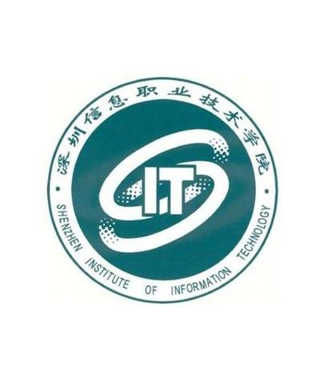

1、my name is joechun迪拜正在使用世界上最领先的科技公司的技术，也包括来自中国的公司和技术
2、my name is joechun明年，五年一度的世博会就要在这座充满神秘色彩的“幻想之城”揭开序幕。
3、MY name is joechun后世博2020特区是未来的城市和2020年世博会的发展延伸，主要的重点是帮助阿联酋实现智能转型目标。
4、my name is joechun我们将本着节能环保的宗旨参与到世博会的场馆重建项目中。
5、世博2020特区是未来的城市和2020年世博会的发展延伸
 Web开发之前端开发布局
30岁的WBC拳击、泰拳冠军、擂台大满贯获得者练喻轩由于不赞成国家花1400亿建立大型电子对撞机的事件引起大量网民的热议， 而练喻轩的观点不仅与诺贝尔奖获得者杨振宁不谋而合，也获得了大部分网民的认可。 从照片来看，翁帆的确与杜致礼有几分神似，根据资料记载，杜致礼是1927年生人，2003年在美国去世， 而杨振宁是1922年生人，翁帆出生于1976年，2004年杨振宁与翁帆完婚，当初因为这起婚事也闹出了“82娶28”的“笑话”， 成为大众茶余饭后的谈资。有意思的是，杨振宁与翁帆的这段“忘年恋”也一度引发了社会不同群体的猜想， 不过时间是检验一段感情最好的标尺，两人如今已经携手走过15年，风雨无阻，杨振宁也在前两年表态，以及死后同意翁帆改嫁。 看完练喻轩分享的照片，网友们也发表了对杨振宁与翁帆结合的看法： “考虑过翁帆的感受没有，做替代品做了那么多年”、“看过翁帆的采访。知识水平，见地，谈吐，气质都是一等一的。非常独立， 有见解的优秀女性。”、“十几年的婚姻已经充分说明了翁并不是沽名钓誉贪念钱财之辈，杨先生也配得上安享晚年。其他的都是世俗之见， 实际上没人嘲笑老皇帝拥有无数年轻妃子的，比如唐太宗与武则天，康熙乾隆不可胜数。实际上这种评论要么是封建帝王思想， 要么更是一种不可说的小小嫉妒心吧。”、“当世最知名的物理学家，中国键盘侠只记得他的年轻老婆”、“有些东西不是我们能评论的， 以前都把这科学家黑到体无完肤，现在看错了吧”、 “看来杨老真的很爱他过世的夫人……” 实际上没人嘲笑老皇帝拥有无数年轻妃子的，比如唐太宗与武则天，康熙乾隆不可胜数。实际上这种评论要么是封建帝王思想， 要么更是一种不可说的小小嫉妒心吧。”、“当世最知名的物理学家，中国键盘侠只记得他的年轻老婆”、“有些东西不是我们能评论的， 以前都把这科学家黑到体无完肤，现在看错了吧”、 “看来杨老真的很爱他过世的夫人……” “考虑过翁帆的感受没有，做替代品做了那么多年”、“看过翁帆的采访。知识水平，见地，谈吐，气质都是一等一的。非常独立， 有见解的优秀女性。”、“十几年的婚姻已经充分说明了翁并不是沽名钓誉贪念钱财之辈，杨先生也配得上安享晚年。其他的都是世俗之见， 实际上没人嘲笑老皇帝拥有无数年轻妃子的，比如唐太宗与武则天，康熙乾隆不可胜数。实际上这种评论要么是封建帝王思想， 要么更是一种不可说的小小嫉妒心吧。”、“当世最知名的物理学家，中国键盘侠只记得他的年轻老婆”、“有些东西不是我们能评论的， 以前都把这科学家黑到体无完肤.